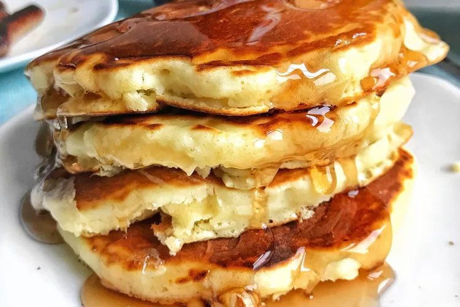

Pancakes

Description
A pancake, also known as hotcake, griddlecake, or flapjack, is a flat cake, often thin and round, prepared from a starch-based batter that may contain
eggs, milk, and butter, and then cooked on a hot surface such as a griddle or frying pan. It is a type of batter bread.
Ingredients
- Flour
- Baking powder
- Sugar
- Salt
- Milk and butter
- Egg
Steps
- Sift flour, baking powder, sugar, and salt together in a large bowl. Make a well in the center and add milk, melted butter, and egg; mix until
smooth.
- Heat a lightly oiled griddle or pan over medium-high heat. Pour or scoop the batter onto the griddle, using approximately 1/4 cup for each pancake;
cook until bubbles form and the edges are dry, about 2 to 3 minutes. Flip and cook until browned on the other side. Repeat with remaining batter.